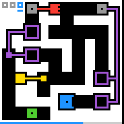

g50t
Move a pawn and record stand-ins that replay your moves; the pawn walking into the end cell clears the level.
7 levels · 13 rules · all levels replayed in Lean
Replay
The certified run that cleared every level, one action at a time. Beside each step: the rules of the model that explain it; they are also marked in the rule list below.

Explained by
Press Play or step to load the run. Keys, while the player is on screen: ← → step, Space play / pause. A click is circled; cells that changed are outlined.
How it plays
The player operates a pawn, and the direction keys make it move one cell on the floor. The field has buttons, portals and carts, and tracks of the same colour link them into a network. Press the switch-board key, and the pawn returns to the start, the moves of the board just played are recorded as a stand-in; in the next board the stand-in replays them, and after finishing stops on the last cell without moving. The stand-in can also step on buttons and go through portals, so clearing the level depends on division of labour: let the stand-in press and hold the button and push aside the cart blocking the way, while the pawn passes during this time. A red spring cart makes way by one cell while the button is pressed, and goes back home when released; a yellow latch cart flips between two cells each time it is stepped on. Going into a portal has to catch the step at which the button on the same network is pressed. The number of slots in the top-left corner limits the number of stand-ins, and some levels also have a ring patrolling along a corridor. The pawn walking into the end cell clears the level.

Model
The final model: 10 object types and 13 rules. Each rule is a Python check against every recorded step; 11 of them are translated into Lean (the paper's per-game table). Code under a rule is the file of the same name in the agent's Lean project.
Object types
- Terrain
terrainWhether each cell is wall, floor, end cell, button, portal, or covered by a cart.Lean · Terrain.lean
import Obj.Geometry.Cell namespace G50t inductive Terrain where | wall | floor | goal | button (col : Nat) | portal (col : Nat) deriving DecidableEq, Repr def Terrain.passable : Terrain → Bool | .wall => false | _ => true end G50t - Tracks
railsThe coloured track lines between neighbouring cells.Lean · Rail.lean
import Obj.Geometry.Cell import Obj.Pieces.Cart namespace G50t structure Track where home : Cell fwd : Cell button : Cell kind : Kind deriving DecidableEq, Repr end G50t - Track networks
wiresEach connected same-colour track network and the buttons, portals and carts it links.Lean · Wire.lean
import Obj.Geometry.Cell namespace G50t structure Link where a : Cell b : Cell triggers : List Cell deriving DecidableEq, Repr end G50t - Pawn
meThe cell where the player's pawn is.Lean · Cell.lean
-- World.me : Cell structure Cell where r : Nat c : Nat deriving DecidableEq, Repr - Stand-ins
ghostsThe cell of each visible stand-in.Lean · World.lean
-- World.ghosts : List Ghost structure Ghost where pos : Cell tape : List Dir deriving DecidableEq, Repr - Ring
walkerThe cell of the self-moving ring; some levels have none.Lean · Cell.lean
-- World.walker : Option Cell structure Cell where r : Nat c : Nat deriving DecidableEq, Repr - Carts
cartsEach cart's cell and whether it is a spring cart or a latch cart.Lean · Cell.lean
-- World.carts : List Cell structure Cell where r : Nat c : Nat deriving DecidableEq, Repr - Slots
hudHow many slots the top-left row has and which slot the cursor marks.Lean · Hud.lean
-- World.hud : Hud structure Hud where n : Nat cursor : Nat deriving DecidableEq, Repr - Counter bar
spentHow many cells of the bottom-row counter bar are spent.Python only - Counter bar gap
bar_gapHow many cells at the right end of the counter bar are not drawn.Python only
Rules
me_steps_if_freeA direction key moves the pawn one cell unless that cell is wall or cart.Python
from __future__ import annotations from derive.cells import enterable, target from rule._common import MOVE_ACTIONS, common_skip … … HISTORY = [ … … … ] def scope_(prev, action, nxt, ctx): s = common_skip(prev, nxt, ctx) if s: return s if action not in MOVE_ACTIONS: … if prev.at(target(prev, action)) in ("A", "B", "F"): … return None def assert_(prev, action, nxt, ctx): t = target(prev, action) want = t if enterable(prev, t) else prev.me return nxt.me == wantLean · MeStepsIfFree.lean
import Obj.Derive.Cells namespace G50t def meStepsIfFree (b : Board) (s : World) (d : Dir) : Cell := tryGo b s.carts s.me d end G50tportal_needs_rising_edgeA portal works only on the step a button on its network gets pressed.Python
from __future__ import annotations from derive.cells import enterable, occupied, target from derive.links import portal_link, rising from rule._common import MOVE_ACTIONS, common_skip … … HISTORY = [ … … … … … … … ] def scope_(prev, action, nxt, ctx): s = common_skip(prev, nxt, ctx) if s: return s if action not in MOVE_ACTIONS: … t = target(prev, action) if prev.at(t) not in ("A", "B", "F"): … if not enterable(prev, t): … if ctx.get("hist") is None: … if portal_link(ctx["hist"].start(prev), t) is None: … return None def assert_(prev, action, nxt, ctx): t = target(prev, action) other, buttons = portal_link(ctx["hist"].start(prev), t) want = other if rising(occupied(prev), occupied(nxt), buttons) else t return nxt.me == wantLean · PortalNeedsRisingEdge.lean
import Obj.Derive.Links namespace G50t def portalNeedsRisingEdge (b : Board) (occ0 occ1 : List Cell) (p0 p1 : Cell) : Cell := if p1 = p0 then p1 else match linkOf b p1 with | some (other, trig) => if rising occ0 occ1 trig then other else p1 | none => p1 end G50tlatch_toggles_on_pressA latch cart flips between two cells each time its button is pressed.Python
from __future__ import annotations from derive.cells import occupied from derive.track import match, tracks from objects.pieces.cart import KIND, LATCH from rule._common import MOVE_ACTIONS, common_skip … … HISTORY = [ … … … ] def scope_(prev, action, nxt, ctx): s = common_skip(prev, nxt, ctx) if s: return s if action not in MOVE_ACTIONS: … if ctx.get("hist") is None: … ts = tracks(ctx["hist"].start(prev)) if not any(KIND.get(t.color) == LATCH for t in ts): … if match(ts, prev) is None or match(ts, nxt) is None: … return None def assert_(prev, action, nxt, ctx): ts = tracks(ctx["hist"].start(prev)) a, b = match(ts, prev), match(ts, nxt) o0, o1 = occupied(prev), occupied(nxt) for t in ts: if KIND.get(t.color) != LATCH: continue want = t.other(a[t]) if (t.button in o1 and t.button not in o0) else a[t] if b[t] != want: return False return TrueLean · LatchTogglesOnPress.lean
import Obj.Derive.Track namespace G50t def latchTogglesOnPress (tr : Track) (occ0 occ1 : List Cell) (pos : Cell) : Cell := if occ1.contains tr.button && !(occ0.contains tr.button) then tr.other pos else pos end G50tghosts_replay_tapesEach stand-in replays its recorded moves, then stays on its last cell.Python
from __future__ import annotations from rule._common import common_skip … … HISTORY = [ … … … … … … ] def scope_(prev, action, nxt, ctx): s = common_skip(prev, nxt, ctx) if s: return s if action not in ("ACTION1", "ACTION2", "ACTION3", "ACTION4"): … if ctx.get("hist") is None: … if not ctx["hist"].tapes(prev) and not prev.ghosts and not nxt.ghosts: … return None def assert_(prev, action, nxt, ctx): pos = ctx["hist"].ghosts_after(prev, action, nxt) seen = set(pos) - {nxt.me} return seen == set(nxt.ghosts)Lean · GhostsReplayTapes.lean
import Obj.Derive.Cells namespace G50t def ghostsReplayTapes (b : Board) (carts : List Cell) (t : Nat) (g : Ghost) : Ghost := match g.tape[t]? with | some d => { g with pos := tryGo b carts g.pos d } | none => g end G50twalker_patrolsThe ring patrols the corridor, moving one cell each time the pawn moves one cell.Python
from __future__ import annotations from derive.cells import enterable from rule._common import common_skip … … … HISTORY = [ … … … … … … ] DIRS = ((-1, 0), (1, 0), (0, -1), (0, 1)) def choice(w, heading): def ok(d): return enterable(w, w.walker + _delta(d)) if heading is not None and ok(heading): return heading back = (-heading[0], -heading[1]) if heading else None side = [d for d in DIRS if d != heading and d != back and ok(d)] if len(side) == 1: return side[0] if len(side) > 1: return None if back is not None and ok(back): return back return (0, 0) def _delta(d): from objects.geometry.delta import Delta return Delta(*d) def scope_(prev, action, nxt, ctx): s = common_skip(prev, nxt, ctx) if s: return s if action == "ACTION5": … if action == "RESET": … if prev.walker is None: … if ctx.get("hist") is None: … if prev.me != nxt.me and choice(prev, ctx["hist"].walker_heading()) is None: … return None def assert_(prev, action, nxt, ctx): if prev.me == nxt.me: return nxt.walker == prev.walker d = choice(prev, ctx["hist"].walker_heading()) want = prev.walker + _delta(d) if want in {c.cell for c in nxt.carts}: return nxt.walker is None return nxt.walker == wantLean · WalkerPatrols.lean
import Obj.Derive.Cells namespace G50t def sides : Dir → List Dir | .up | .down => [.left, .right] | .left | .right => [.up, .down] def canGo (b : Board) (carts : List Cell) (w : Cell) (d : Dir) : Bool := match w.go d with | some y => enterable b carts y | none => false def walkerChoice (b : Board) (carts : List Cell) (w : Cell) : Option Dir → Option Dir | some h => if canGo b carts w h then some h else match (sides h).filter (canGo b carts w) with | [d] => some d | [] => if canGo b carts w h.back then some h.back else none | _ => none | none => match [Dir.up, Dir.down, Dir.left, Dir.right].filter (canGo b carts w) with | [d] => some d | _ => none def walkerPatrols (b : Board) (carts : List Cell) (w : Option Cell) (h : Option Dir) : Option Cell × Option Dir := match w with | none => (none, h) | some x => match walkerChoice b carts x h with | some d => ((x.go d).orElse (fun _ => some x), some d) | none => (some x, h) end G50thud_cursor_cycleThe switch-board key moves the top-left cursor to the next slot, wrapping around.Python
from __future__ import annotations from rule._common import common_skip … HISTORY = [ … … ] def scope_(prev, action, nxt, ctx): s = common_skip(prev, nxt, ctx) if s: return s if action == "RESET": … return None def assert_(prev, action, nxt, ctx): n, k = prev.hud.n, prev.hud.cursor if nxt.hud.n != n: return False if action == "ACTION5": return nxt.hud.cursor == (k + 1) % n return nxt.hud.cursor == kLean · HudCursorCycle.lean
import Obj.Panel.Hud namespace G50t def hudCursorCycle (h : Hud) : Hud := { h with cursor := (h.cursor + 1) % h.n } end G50tswitch_restarts_roundThe switch-board key returns the pawn, all stand-ins and the ring to their start cells.Python
from __future__ import annotations from rule._common import common_skip … HISTORY = [ … … … … ] def scope_(prev, action, nxt, ctx): s = common_skip(prev, nxt, ctx) if s: return s if action != "ACTION5": … if ctx.get("hist") is None: … return None def assert_(prev, action, nxt, ctx): w0 = ctx["hist"].start(prev) return nxt.me == w0.me and not nxt.ghosts and nxt.walker == w0.walkerLean · SwitchRestartsRound.lean
import Obj.Board.Board import Obj.World namespace G50t def switchRestartsRound (b : Board) (s : World) (wrap : Bool) : List Ghost := if wrap then [] else s.ghosts.map (fun g => { g with pos := b.start }) ++ [⟨b.start, s.tape⟩] end G50tswitch_rewinds_cartsThe switch-board key returns carts to where they stood when this board began.Python
from __future__ import annotations from derive.cells import occupied from derive.track import match, tracks from objects.pieces.cart import KIND, LATCH, SPRING from rule._common import common_skip … HISTORY = [ … … … … ] def scope_(prev, action, nxt, ctx): s = common_skip(prev, nxt, ctx) if s: return s if action != "ACTION5": … if ctx.get("hist") is None: … ts = tracks(ctx["hist"].start(prev)) if not ts: … if match(ts, prev) is None or match(ts, nxt) is None: … return None def assert_(prev, action, nxt, ctx): h = ctx["hist"] ts = tracks(h.start(prev)) fs = h.frames(prev) r0 = match(ts, fs[h.round_start()]) a, b = match(ts, prev), match(ts, nxt) occ = occupied(prev) for t in ts: k = KIND.get(t.color) if k == SPRING: want = t.home elif k == LATCH: want = a[t] if t.button in occ else r0[t] else: want = a[t] if b[t] != want: return False return TrueLean · SwitchRewindsCarts.lean
import Obj.Board.Rail namespace G50t def switchRewindsCarts (tr : Track) (occ0 : List Cell) (pos roundPos : Cell) : Cell := match tr.kind with | .spring => tr.home | .latch => if occ0.contains tr.button then pos else roundPos | .other => pos end G50tgoal_is_levelupThe pawn walking into the end cell clears the level on that step.Python
from __future__ import annotations from derive.cells import enterable, target from objects.board.terrain import GOAL from rule._common import MOVE_ACTIONS … … HISTORY = [ … ] def scope_(prev, action, nxt, ctx): if prev is None: … if action not in MOVE_ACTIONS: … if ctx.get("level_prev") is None or ctx.get("level_next") is None: … return None def assert_(prev, action, nxt, ctx): t = target(prev, action) hit = prev.at(t) == GOAL and enterable(prev, t) up = ctx["level_next"] == ctx["level_prev"] + 1 same = ctx["level_next"] == ctx["level_prev"] return up if hit else sameLean · GoalIsLevelup.lean
import Obj.Board.Board import Obj.World namespace G50t def isGoal (b : Board) (s : World) : Bool := b.at s.me == .goal end G50tghosts_never_outnumber_slotsThe number of stand-ins always equals the slot number the cursor marks.Python onlybar_ticksThe counter bar spends one cell every two beats; each step is one beat.Python onlyPython
from __future__ import annotations from rule._common import common_skip … … … … … HISTORY = [ … … … … ] def scope_(prev, action, nxt, ctx): s = common_skip(prev, nxt, ctx) if s: return s if action == "RESET": … if ctx.get("hist") is None: … return None def assert_(prev, action, nxt, ctx): h = ctx["hist"] t = h.ticks() d = nxt.spent - prev.spent last = None for i, (p, _, n) in enumerate(h.steps): if n.spent > p.spent: last = i + 1 want = (t - last == 2) if last is not None else (t == 2 + 2 * nxt.bar_gap) return d == (1 if want else 0)reset_restores_startThe reset key restores this level's opening position.Python onlyPython
from __future__ import annotations from rule._common import common_skip … … … … … HISTORY = [ … … … ] def scope_(prev, action, nxt, ctx): s = common_skip(prev, nxt, ctx) if s: return s if action != "RESET": … if ctx.get("hist") is None: … return None def assert_(prev, action, nxt, ctx): w0 = ctx["hist"].start(prev) return (nxt.me == w0.me and nxt.walker == w0.walker and nxt.carts == w0.carts and not nxt.ghosts and nxt.hud == w0.hud and nxt.spent == 0)
Code is shown with comments and the agent's notes removed; the files as written are in the archive under Check it yourself.
Proof
For every level, Lean starts from the level's first screen, applies the model's rules to the certified actions, and checks that every computed state agrees with the recorded frame on the components the model represents, and that the last one wins. Each theorem is closed by the Lean kernel and is a statement about the learned model.
Every level can be won
theorem L0_winnable : L0_acts.length = 17 ∧ Winnable board11 (L0_start : World) := …theorem L1_winnable : L1_acts.length = 31 ∧ Winnable board12 (L1_start : World) := …theorem L2_winnable : L2_acts.length = 64 ∧ Winnable board13 (L2_start : World) := …theorem L3_winnable : L3_acts.length = 31 ∧ Winnable board14 (L3_start : World) := …theorem L4_winnable : L4_acts.length = 52 ∧ Winnable board15 (L4_start : World) := …theorem L5_winnable : L5_acts.length = 49 ∧ Winnable board16 (L5_start : World) := …theorem L6_winnable : L6_acts.length = 43 ∧ Winnable board17 (L6_start : World) := …Statements only; the proofs and the full Lean project are in the archive, with the steps to re-run them, under Check it yourself.
Check it yourself
Everything on this page comes from files you can download and check. The archive holds the agent's files: the recorded run, the concept book, the concept sources, the Lean project and the sealed model file, plus the record of our kernel check.
Download g50t.zip 0.4 MB · 75 files
Re-run the proof
Before you start: our run of this check took 52 s and 3.2 GB of memory at its peak (2026-10-23).
- Download g50t.zip and unpack it. The model and its theorems are in
archive/g50t-20260912/formal/Game.lean. Before changing it, check that its SHA-256 isd0aecf39aac07317d583908cffd7db37f8e7447f397af632dae635e15e9968d8 - Install Lean with elan, then the version named in the archive's
lean-toolchain:elan toolchain install leanprover/lean4:v4.34.0 - Copy the model file to
Check.leanand append these two lines to the copy:#print axioms consistent #print axioms faithful - In the folder that holds
Check.lean, run:lean +leanprover/lean4:v4.34.0 -M60000 Check.lean - Lean should finish without errors and print:
The first line is printed by the file itself: for each rule, how many recorded transitions meet its condition.GUARD_HITS step_delta=660,move_iff_free=660,portal_teleport=13,portal_pairing=13,ghost_follows_me=673,ghost_respects_blocking=707,ghosts_never_outnumber_slots=707,switch_hides_ghosts=30,switch_rewinds_carts=30,cart_shifts_on_press=673,hud_cursor_cycle=707,bar_cost=707,goal_is_levelup=673,reset_clears_the_level=4,button_shape_at_rail_end=707,walker_dies_only_to_moving_cart=238,walker_enters_only_free=229,walker_steps_when_i_step=229,walker_walks_alone=229 'consistent' depends on axioms: [propext] 'faithful' depends on axioms: [propext]
What a pass establishes
consistent: for every recorded transition, as read by the agent's parser and with duplicates removed, every rule whose condition holds also has its effect hold. faithful: the certified run, recomputed step by step from the first screen of each level, matches the record and ends in a win. Axioms used: propext, all among Lean's standard ones.
What it does not establish: that the parser reads the screens correctly (that step runs in Python, outside Lean), or that a rule whose condition never occurs in the record is right. The Python file that produced the readings inside the model file is in the archive at meta/repair-20260928/lib/g50t-20260912/_lib.py.